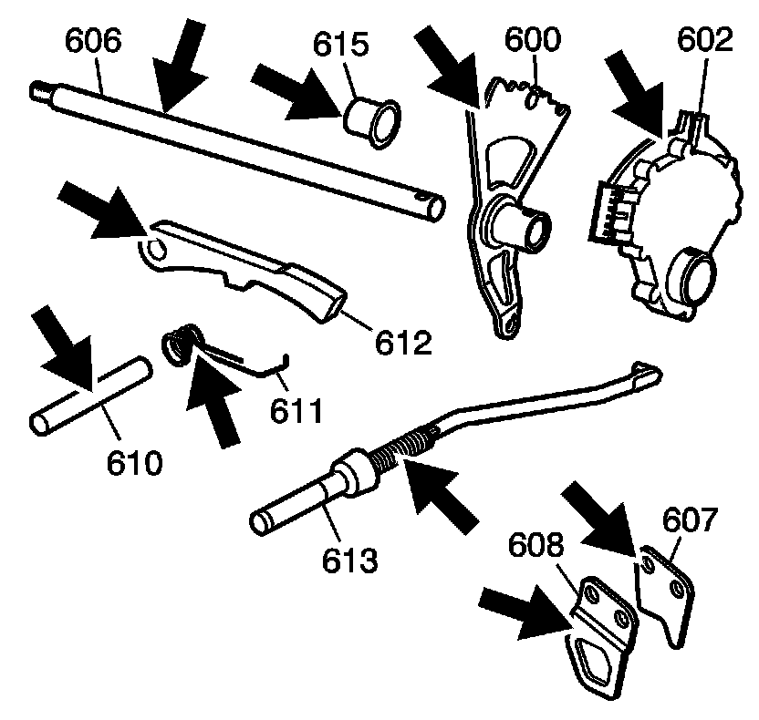
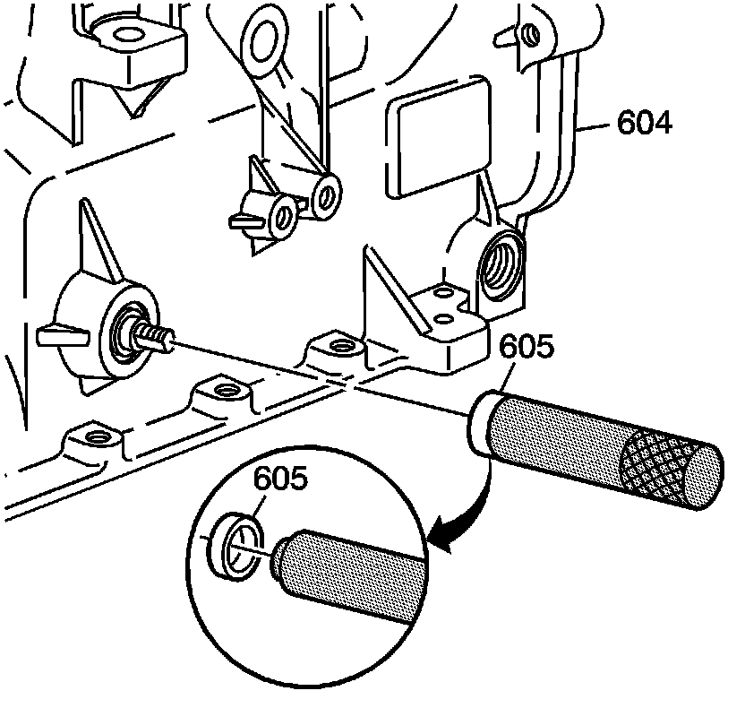

Parking System Components Installation
Parking System Components Installation
Tools Required
J 44767 Seal Installer

1. Inspect the park system components for the following:
* Worn park pawl actuator brackets (607, 608)
* A damaged or bent park pawl actuator assembly (613)
* A damaged manual shaft detent lever (600)
* A damaged manual shaft shift switch assembly (602)
* A worn or stripped manual shaft (606)
* A worn or damaged park pawl shaft (610), park pawl spring (611), and park pawl (612)
* A worn or damaged spacer (615), some models

2. Install the park pawl actuator brackets (607, 608) onto the case.
Notice: Refer to Fastener Notice .
3. Install the bracket bolts (609).
Tighten the bracket bolts to 22 N.m (16 lb ft).

4. Install the park pawl (612), the park pawl spring (611), and the park pawl shaft (610) into the case.
5. Install the park pawl actuator (613) into the case.

6. Assemble the shift switch assembly (602) and spacer (615) - some models onto the detent lever (600).
7. Assemble the park pawl actuator (613) into the detent lever (600).
8. Install the manual shaft (606) into the case.

9. Align the groove for the new manual shaft pin (601) with the pin hole in the detent lever/shift switch assembly.
10. Install the manual shaft pin (601) into the manual shift shaft (606).

11. Install a NEW manual shaft seal (605) onto J 44767 .
12. Use a J 44767 to install the NEW manual shaft seal (605) into the case (604).